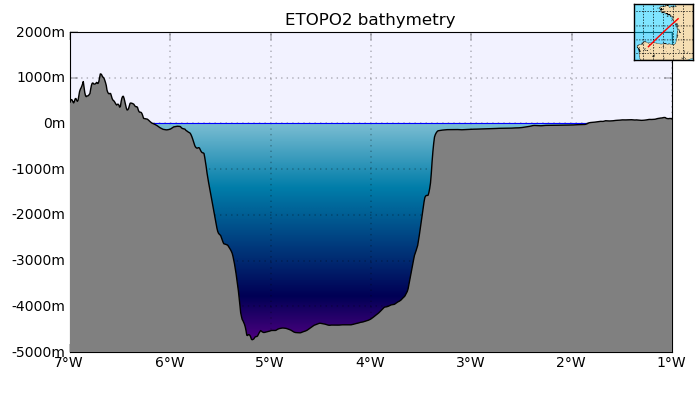
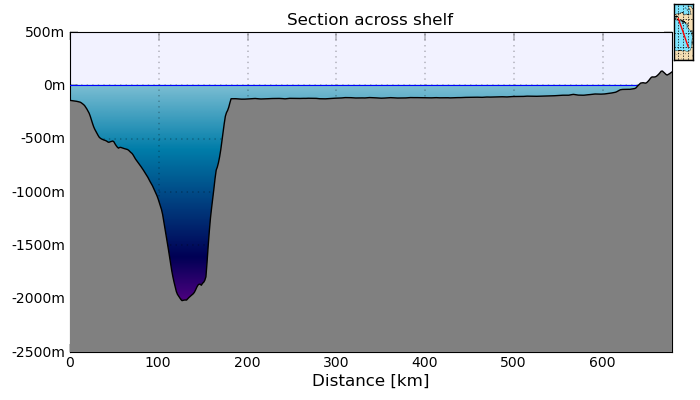

1.6.2.7. showbatsec.py – Plot section of bathymetry¶
| Usage: | showbatsec.py [options] [ncfile]
|
|---|---|
| Description: | Plot a section of bathymetry. |
| Options: |
|
| Examples: | $> showbatsec.py -o showbatsec1.png
Please set longitude of first point: -7
Please set latitude of first point: 43
Please set longitude of second point: -1
Please set latitude of second point: 47

Figure created using the first example. $> showbatsec.py --x0=-2 --y0=44 --x1=-4 --y1=48 \
--along=m --title="Section across shelf" -o showbatsec2.png

Figure created using the second example. |
| See also: |